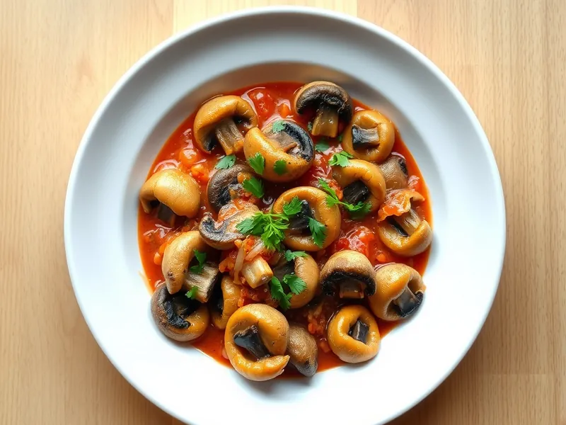

Грибной гуляш с паприкой постный
Венгерский гуляш без мяса: шампиньоны с луком и перцем в густом соусе с паприкой
25 мин2 порц.307 ккал на порциюБ 15 · Ж 18 · У 25Европейская кухня
Открыть в приложении: порции, таймеры, список покупок
Продукты на 2 порц.
- Шампиньоны500 г
- Лук репчатый2 шт
- Перец болгарский1 шт
- Паприка1 ст. л.
- Томатная паста1 ст. л.
- Мука пшеничная2 ч. л.
- Вода200 мл
- Растительное масло2 ст. л.
- Чеснок2 зуб.
- Зира по желанию1 щеп.
- Соль1 щеп.
- Петрушка по желаниюпо вкусу
Как готовить
- Нарежьте грибы на четвертинки, лук и перец кубиком, чеснок мелко. На это уйдёт 5 минут.
- Разогрейте масло на среднем огне и обжарьте лук 5 минут до мягкости и золотистого цвета.
- Добавьте грибы и перец и жарьте на сильном огне 6 минут, пока сок не выпарится.
- Снимите сковороду с огня, всыпьте паприку и муку и перемешайте, чтобы паприка не пригорела. Добавьте томатную пасту, чеснок и воду.
- Верните на слабый огонь, посолите и тушите 7 минут под крышкой, пока соус не загустеет и не станет бархатным. Посыпьте петрушкой.
Совет. Паприку всыпайте на снятой с огня сковороде: на сильном жаре она за секунды горчит.